Învierea lui Iisus este evenimentul
central al credinței creștine. Astăzi vom explora momentele
cruciale de la răstignirea lui Iisus până la arătările Sale după
înviere.
Răstignirea și îngroparea
Într-o zi de vineri, într-un colț al
Ierusalimului se petrece eveniment care avea să schimbe cursul
istoriei pentru totdeauna. Cu câteva ore înainte de cea mai
importată sărbătoare din an pentru evrei, în oraș se auzea zumzetul
pregătirilor pentru Paștele evreiesc (Pesah), ce urma să înceapă la
apusul soarelui.
Pesah era o sărbătoare sfântă pentru evrei, comemorând eliberarea
strămoșilor lor din sclavia egipteană, o poveste de speranță și
salvare.
În acea zi, la ceasul al treilea (ora 9 dimineața), pe dealul
Golgotei, Iisus din Nazaret a fost răstignit. La ora 3 după-amiaza
(ceasul al nouălea), a strigat:
Tată, în mâinile Tale Îmi încredințez duhul!
și a murit. În acel moment, majoritatea apostolilor săi erau
ascunși, temându-se că vor avea aceeași soartă.
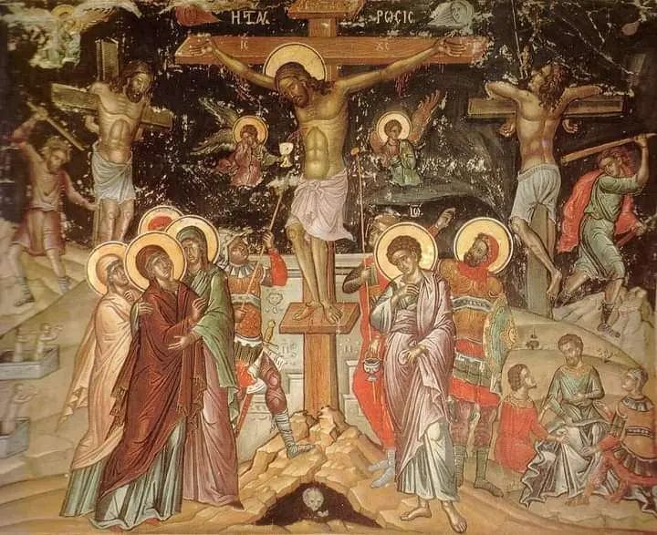
Răstignirea lui Iisus pe dealul Golgota
Iosif din Arimateea, un membru
respectat al Sinedriului și ucenic secret al lui Iisus, împreună cu
Nicodim, au coborât trupul lui Iisus
de pe cruce. L-au înfășurat într-un giulgiu curat și l-au pus
într-un mormânt nou, săpat în stâncă.
"Coborârea de pe cruce" (1435) - un exemplu remarcabil al artei
religioase care ilustrează realismul emoțional și atenția la detalii
caracteristice pictorului flamand Rogier van der Weyden
Mormântul era situat într-o grădină aproape de locul răstignirii. O
piatră mare a fost rostogolită la intrarea mormântului.
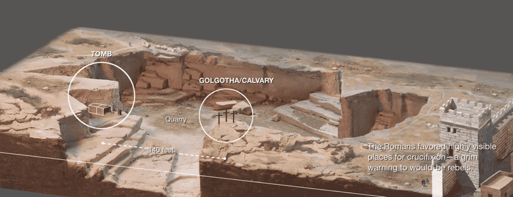
Mormântul lui Iisus, situat în apropierea Golgotei
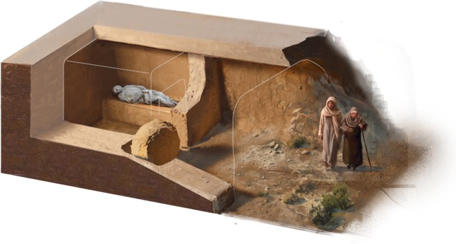
Iisus în mormânt
Autoritățile evreiești au cerut lui Pilat să securizeze mormântul,
temându-se ca nu cumva ucenicii lui Iisus să fure trupul și să
pretindă că a înviat. Pilat a trimis soldați romani care au pus un
sigiliu pe piatră și apoi au rămas acolo păzi mormântul.
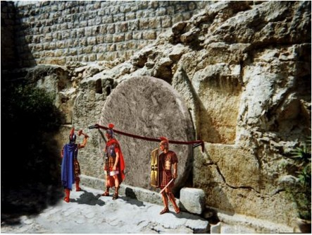
Sigiliul și paza soldaților
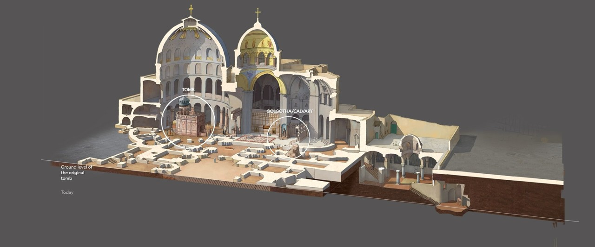
Biserica Sfântului Mormânt și Golgota azi, Ierusalim
Descoperirea mormântului gol
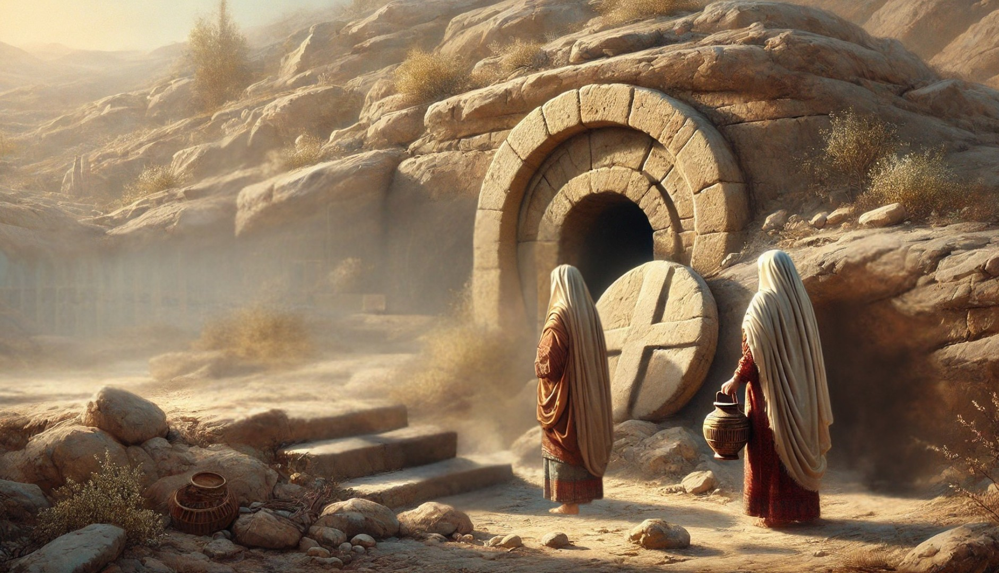
Femeile mironosițe mergând la mormântul lui Iisus în dimineața
Învierii
În prima zi a săptămânii (duminica), dis-de-dimineață,
Maria Magdalena și alte femei
mironosițe au venit la mormânt aducând
miresme pentru a unge trupul lui Iisus. Ele au găsit piatra
răsturnată și mormântul gol. Un înger le-a apărut și le-a spus:
Nu este aici, a înviat!
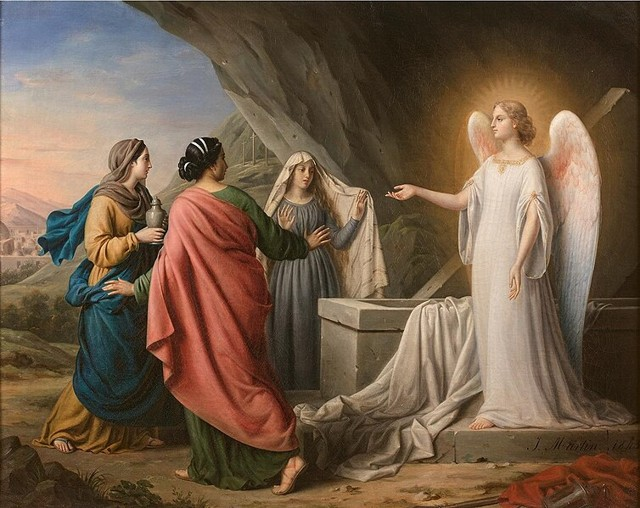
Apariția îngerului - Femeile mironosițe primind vestea Învierii
Când Maria Magdalena le-a spus apostolilor despre mormântul gol,
Petru și Ioan au alergat să vadă. Au găsit mormântul gol, cu
giulgiul pus deoparte, dar încă nu înțelegeau pe deplin ce se
întâmplase.
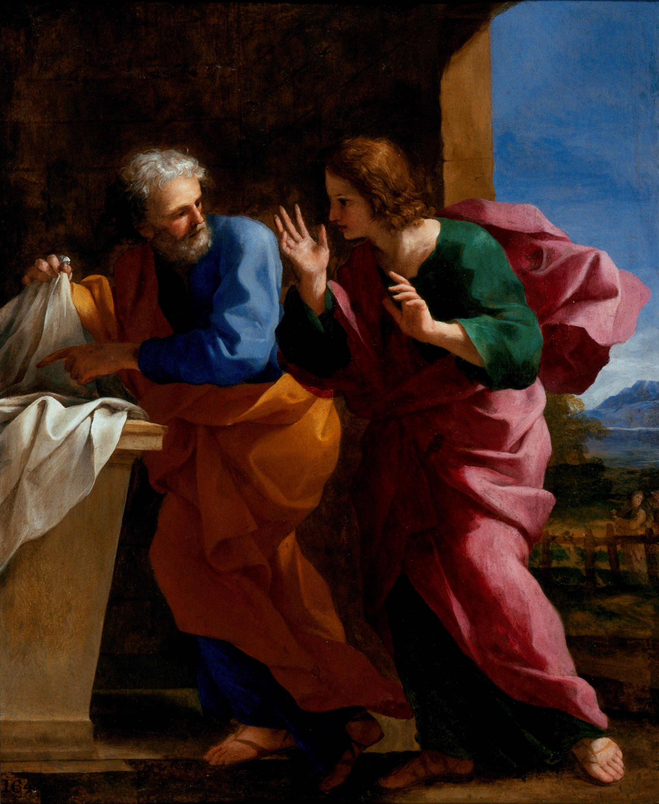
Petru și Ioan la mormântul lui Iisus
Arătările lui Iisus
După înviere, Iisus s-a arătat mai multor persoane, confirmând
realitatea învierii Sale:
Mariei Magdalena, prima persoană care L-a văzut
înviat. Iisus i-a spus să meargă și să vestească apostolilor
Ucenicilor de pe drumul Emausului, care L-au
recunoscut când a frânt pâinea
Apostolilor în camera încuiată, cărora le-a
arătat rănile Sale
Lui Toma, care atunci când L-a văzut înviat a
exclamat:
„Domnul meu și Dumnezeul meu!"
Pe țărmul Mării Tiberiadei, când apostolii
pescuiau
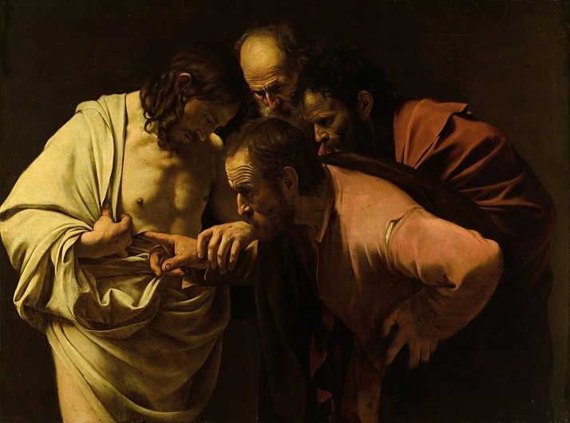
Necredința lui Toma (Caravaggio, 1602)
Timp de 40 de zile după învierea Sa,
Iisus a continuat să se arate apostolilor și să-i învețe despre
Împărăția lui Dumnezeu. Aceste apariții i-au transformat din oameni
temători în martori plini de curaj.
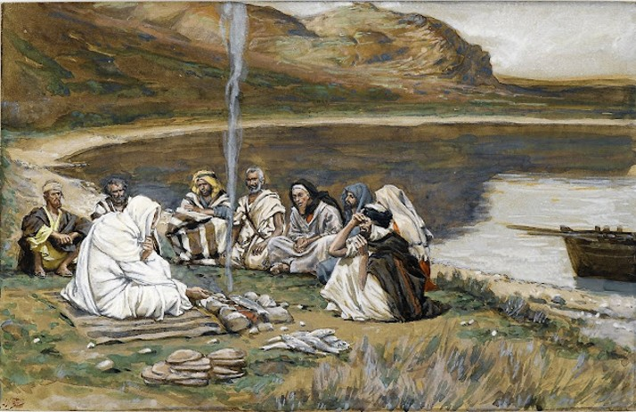
Iisus se arată apostolilor și le vorbește despre Împărăția lui
Dumnezeu
În final, pe Muntele Măslinilor, Iisus i-a binecuvântat pe apostoli
și le-a dat Marea Trimitere:
Drept aceea, mergând, învăţaţi toate neamurile, botezându-le în
numele Tatălui şi al Fiului şi al Sfântului Duh, învăţându-le să
păzească toate câte v-am poruncit vouă, şi iată Eu cu voi sunt
în toate zilele, până la sfârşitul veacului. Amin.
Matei 28, 19-20
După aceea, s-a înălțat la cer în fața lor.
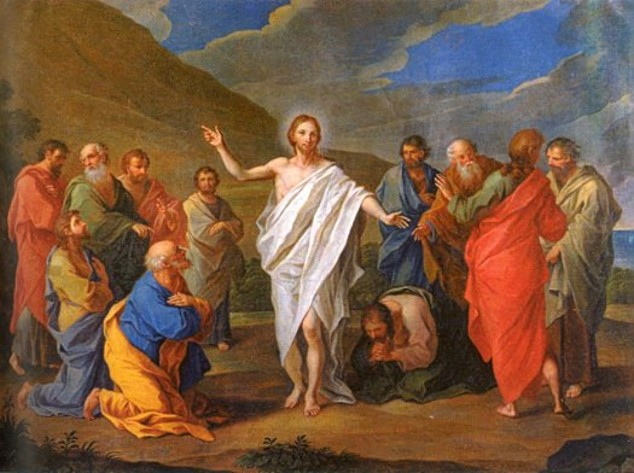
Iisus binecuvântează apostolii înainte de Înălțare
Semnificația Învierii
Învierea lui Iisus este temelia credinței creștine și are multiple
semnificații:
Confirmă că Iisus este cu adevărat Fiul lui Dumnezeu
Demonstrează biruința vieții asupra morții
Oferă tuturor credincioșilor speranța învierii
A transformat apostolii din oameni temători în martori curajoși
Datorită acestei transformări,
apostolii care inițial se ascundeau au
devenit apoi neînfricați, predicând cu îndrăzneală învierea lui
Iisus. Ei au fost dispuși chiar
să-și dea viața pentru această
mărturie, ceea ce demonstrează autenticitatea întâlnirii lor cu
Hristos cel Înviat.
Învierea lui Iisus continuă să inspire milioane de oameni și astăzi.
Creștinii din întreaga lume sărbătoresc Paștele și se salută cu
cuvintele:
„Hristos a înviat! Adevărat a înviat!"
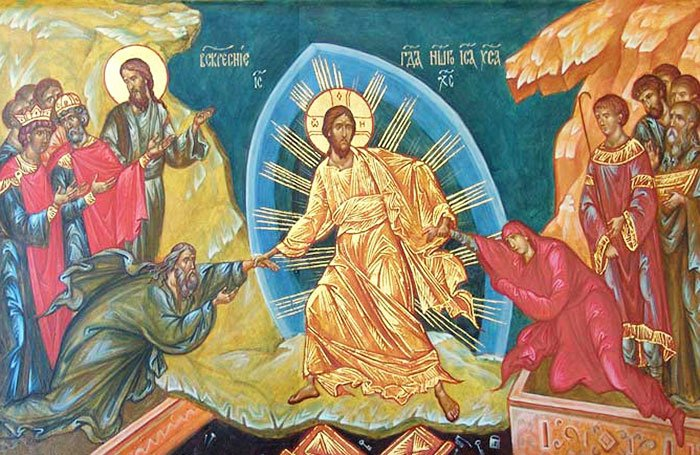
Hristos a Înviat!
Sărbătoarea Paștelui în zilele noastre
Astăzi, creștinii ortodocși continuă să celebreze Învierea lui
Hristos prin ritualuri și tradiții bogate care ne leagă de aceste
evenimente sacre:
Slujba de Înviere - În noaptea de
Paște, credincioșii merg la biserică pentru a participa la slujba
de Înviere. La miezul nopții, preotul iese din altar cu lumânarea
aprinsă, anunțând „Veniți de luați lumină!" și proclamând „Hristos
a Înviat!"
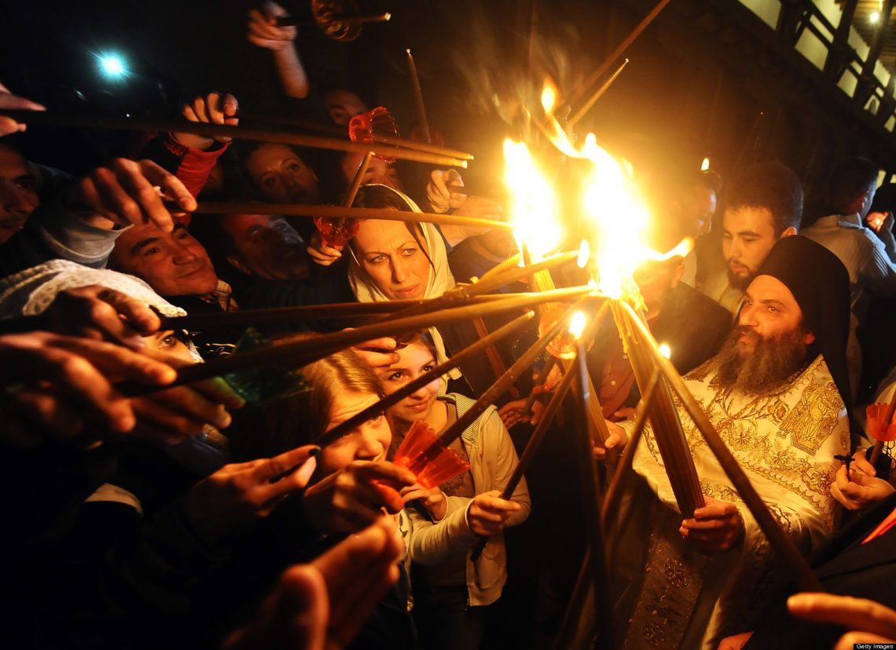
Bisericile în noaptea de Înviere
Procesiunea pascală - După ce
primesc lumina, credincioșii înconjoară biserica în procesiune,
simbolizând cele trei zile în care Iisus a stat în mormânt.
Lumânările de Paște - Lumânarea
reprezintă lumina lui Hristos care a biruit întunericul morții.
Credincioșii duc această lumină acasă, încercând să o păstreze
aprinsă pe tot drumul.
Salutul pascal - Timp de 40 de zile
după Paște, creștinii se salută cu „Hristos a Înviat!" și răspund
„Adevărat a Înviat!", amintindu-și unii altora de acest eveniment
central al credinței.
Masa de Paște este un moment important
de comuniune familială. Pe masa de Paște se pun:
Ouăle roșii - Simbolizează sângele lui Hristos și
noul început. Există tradiția de a ciocni ouăle, spunând „Hristos
a Înviat!" și „Adevărat a Înviat!"
Pasca - Un cozonac special, adesea în formă
rotundă cu cruce deasupra, reprezentând pâinea binecuvântată
Mielul - Simbolizează jertfa lui Iisus, „Mielul
lui Dumnezeu"
Cozonacul - Un desert tradițional care se împarte
cu familia și prietenii
Toate aceste tradiții ne ajută să participăm la
bucuria Învierii și să ne amintim că,
așa cum apostolii au fost transformați de întâlnirea cu Hristos cel
Înviat, și noi putem fi transformați prin sărbătorirea acestui
eveniment sfânt. Paștele nu este doar comemorarea unui eveniment
istoric din trecut, ci o realitate vie care continuă să inspire și
să schimbe vieți.